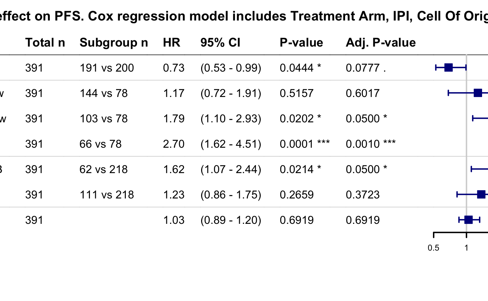

wrapper_core_cox_regression_simple.RdThis function can be used if one is interested in effects of multiple covariates in a multivariate model.
wrapper_core_cox_regression_simple( data, tte_var, censor_var, covariate_vars, strata_vars = NULL, return_vars = NULL, variable_names = NULL, caption = NULL, force_empty_cols = FALSE, print_mst = TRUE, print_total = TRUE, print_pvalues = TRUE, print_adjpvalues = TRUE ) wrapper_core_cox_regression_simple_strat( data, tte_var, censor_var, covariate_vars, strata_vars = NULL, return_vars = NULL, strat1_var = NULL, strat2_var = NULL, variable_names = NULL, caption = NULL, force_empty_cols = FALSE, print_mst = TRUE, print_total = TRUE, print_pvalues = TRUE, print_adjpvalues = TRUE )
| data | Data frame. |
|---|---|
| tte_var | Name of the time-to-event variable. This variable must be numeric. |
| censor_var | Name of the censor variable. It has to be numeric and encode 1 for event and 0 for censor. |
| covariate_vars | Vector with names of covariates that are included in the formula of the simple additive model. |
| strata_vars | Vector with names of covariates that are used as strata. |
| return_vars | Vector with names of covariates for which the statistics should be returned. If NULL, statistics are returned for all covariates. |
| variable_names | Named vector with variable names. If not supplied, variable names are created by replacing in column names underscores with spaces. |
| caption | Caption for the table with results. |
| force_empty_cols | Logical. Whether to display output columns which are all empty. |
| print_mst | Logical. Whether to print median survival time (MST). |
| print_total | Logical. Whether to print total number of samples and total number of events. |
| print_pvalues | Logical. Whether to print p-values. |
| print_adjpvalues | Logical. Whether to print adjusted p-values. |
| strat1_var | Name of the firts stratification variable. |
| strat2_var | Name of the second stratification variable. |
If for a factor covariate that should be returned the reference level has zero count, results are set to NAs because this levels is not used as a reference which means that it is not possible to fit the model that we want.
data(bdata) data <- bdata tte_var <- "PFS" censor_var <- "PFS_Event" covariate_vars <- c("Treatment_Arm", "GeneA", "IPI", "Cell_Of_Origin") x <- wrapper_core_cox_regression_simple(data, tte_var = tte_var, censor_var = censor_var, covariate_vars = covariate_vars)#> Warning: row names were found from a short variable and have been discarded#> Warning: row names were found from a short variable and have been discarded#> Warning: row names were found from a short variable and have been discardedboutput(x)#> Covariate Subgroup Total N Total Events N Events HR #> 1 Treatment Arm CTRL 391 165 200 85 (42.5%) #> 2 TRT 391 165 191 80 (41.9%) 0.73 #> 3 GeneA 391 165 1.03 #> 4 IPI Low 391 165 78 25 (32.1%) #> 5 Low-Intermediate 391 165 144 51 (35.4%) 1.17 #> 6 High-Intermediate 391 165 103 49 (47.6%) 1.79 #> 7 High 391 165 66 40 (60.6%) 2.70 #> 8 Cell Of Origin GCB 391 165 218 80 (36.7%) #> 9 UNCLASSIFIED 391 165 62 34 (54.8%) 1.62 #> 10 ABC 391 165 111 51 (45.9%) 1.23 #> HR 95% CI P-value Adj. P-value #> 1 #> 2 (0.53 - 0.99) 0.0444 * 0.0777 . #> 3 (0.89 - 1.20) 0.6919 0.6919 #> 4 #> 5 (0.72 - 1.91) 0.5157 0.6017 #> 6 (1.10 - 2.93) 0.0202 * 0.0500 * #> 7 (1.62 - 4.51) 0.0001 *** 0.0010 *** #> 8 #> 9 (1.07 - 2.44) 0.0214 * 0.0500 * #> 10 (0.86 - 1.75) 0.2659 0.3723bforest(x)### Fit a stratified model covariate_vars <- c("Treatment_Arm", "GeneA") strata_vars <- c("IPI", "Cell_Of_Origin") x <- wrapper_core_cox_regression_simple(data, tte_var = tte_var, censor_var = censor_var, covariate_vars = covariate_vars, strata_vars = strata_vars)#> Warning: row names were found from a short variable and have been discardedboutput(x)#> Covariate Subgroup Total N Total Events N Events HR HR 95% CI #> 1 Treatment Arm CTRL 391 165 200 85 (42.5%) #> 2 TRT 391 165 191 80 (41.9%) 0.74 (0.54 - 1.01) #> 3 GeneA 391 165 0.99 (0.85 - 1.16) #> P-value Adj. P-value #> 1 #> 2 0.0555 . 0.1110 #> 3 0.9334 0.9334data(bdata) data <- bdata tte_var <- "PFS" censor_var <- "PFS_Event" covariate_vars <- c("IPI", "GeneA") strat1_var = "Cell_Of_Origin" strat2_var = "Treatment_Arm" x <- wrapper_core_cox_regression_simple_strat(data, tte_var = tte_var, censor_var = censor_var, covariate_vars = covariate_vars, strat1_var = strat1_var, strat2_var = strat2_var)#> Warning: row names were found from a short variable and have been discarded#> Warning: row names were found from a short variable and have been discarded#> Warning: row names were found from a short variable and have been discarded#> Warning: row names were found from a short variable and have been discarded#> Warning: row names were found from a short variable and have been discarded#> Warning: row names were found from a short variable and have been discardedboutput(x)#> Treatment Arm Cell Of Origin Covariate Subgroup Total N #> 1 CTRL GCB IPI Low 121 #> 2 Low-Intermediate 121 #> 3 High-Intermediate 121 #> 4 High 121 #> 5 CTRL GCB GeneA 121 #> 6 CTRL UNCLASSIFIED IPI Low 28 #> 7 Low-Intermediate 28 #> 8 High-Intermediate 28 #> 9 High 28 #> 10 CTRL UNCLASSIFIED GeneA 28 #> 11 CTRL ABC IPI Low 51 #> 12 Low-Intermediate 51 #> 13 High-Intermediate 51 #> 14 High 51 #> 15 CTRL ABC GeneA 51 #> 16 TRT GCB IPI Low 97 #> 17 Low-Intermediate 97 #> 18 High-Intermediate 97 #> 19 High 97 #> 20 TRT GCB GeneA 97 #> 21 TRT UNCLASSIFIED IPI Low 34 #> 22 Low-Intermediate 34 #> 23 High-Intermediate 34 #> 24 High 34 #> 25 TRT UNCLASSIFIED GeneA 34 #> 26 TRT ABC IPI Low 60 #> 27 Low-Intermediate 60 #> 28 High-Intermediate 60 #> 29 High 60 #> 30 TRT ABC GeneA 60 #> Total Events N Events HR HR 95% CI P-value Adj. P-value #> 1 50 32 12 (37.5%) #> 2 50 44 14 (31.8%) 0.97 (0.45 - 2.11) 0.9439 0.9676 #> 3 50 32 17 (53.1%) 2.22 (1.05 - 4.70) 0.0374 * 0.2777 #> 4 50 13 7 (53.8%) 1.89 (0.74 - 4.82) 0.1860 0.5209 #> 5 50 0.99 (0.73 - 1.34) 0.9417 0.9676 #> 6 14 7 3 (42.9%) #> 7 14 10 6 (60.0%) 1.65 (0.37 - 7.43) 0.5120 0.8292 #> 8 14 7 3 (42.9%) 1.29 (0.25 - 6.61) 0.7592 0.9590 #> 9 14 4 2 (50.0%) 1.74 (0.28 - 10.74) 0.5528 0.8292 #> 10 14 0.93 (0.59 - 1.45) 0.7359 0.9590 #> 11 21 5 2 (40.0%) #> 12 21 17 3 (17.6%) 0.23 (0.03 - 1.53) 0.1271 0.5085 #> 13 21 18 9 (50.0%) 0.91 (0.18 - 4.62) 0.9130 0.9676 #> 14 21 11 7 (63.6%) 2.91 (0.59 - 14.20) 0.1874 0.5209 #> 15 21 1.68 (1.01 - 2.79) 0.0463 * 0.2777 #> 16 30 23 3 (13.0%) #> 17 30 36 9 (25.0%) 2.19 (0.59 - 8.13) 0.2396 0.5229 #> 18 30 20 7 (35.0%) 3.06 (0.79 - 11.86) 0.1065 0.5085 #> 19 30 18 11 (61.1%) 6.13 (1.70 - 22.09) 0.0055 ** 0.1328 #> 20 30 1.08 (0.71 - 1.64) 0.7348 0.9590 #> 21 20 5 1 (20.0%) #> 22 20 14 8 (57.1%) 3.53 (0.44 - 28.27) 0.2346 0.5229 #> 23 20 10 6 (60.0%) 4.07 (0.49 - 34.00) 0.1954 0.5209 #> 24 20 5 5 (100.0%) 10.54 (1.07 - 103.38) 0.0433 * 0.2777 #> 25 20 1.02 (0.67 - 1.54) 0.9268 0.9676 #> 26 30 6 4 (66.7%) #> 27 30 23 11 (47.8%) 0.70 (0.22 - 2.20) 0.5411 0.8292 #> 28 30 16 7 (43.8%) 0.63 (0.18 - 2.15) 0.4583 0.8292 #> 29 30 15 8 (53.3%) 1.03 (0.31 - 3.42) 0.9676 0.9676 #> 30 30 0.81 (0.53 - 1.25) 0.3499 0.6999